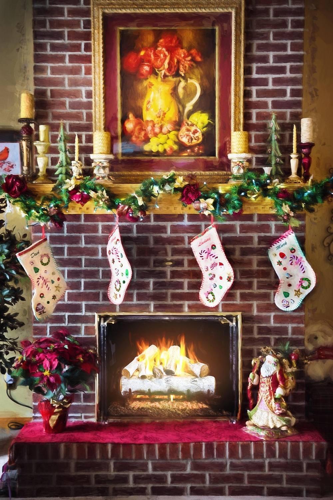
November 18, 2026
Puzzle books all look alike on the shelf. Four questions to ask before you buy, which book suits a grandparent, a teen or a child, what to tuck in beside it, and free pages to test the print size first.
November 17, 2026
"Don't buy me anything" usually means "don't buy me clutter". Gift ideas for grandparents who have everything: things they use up, gifts of time, gifts that keep memories, and how to choose the right one.
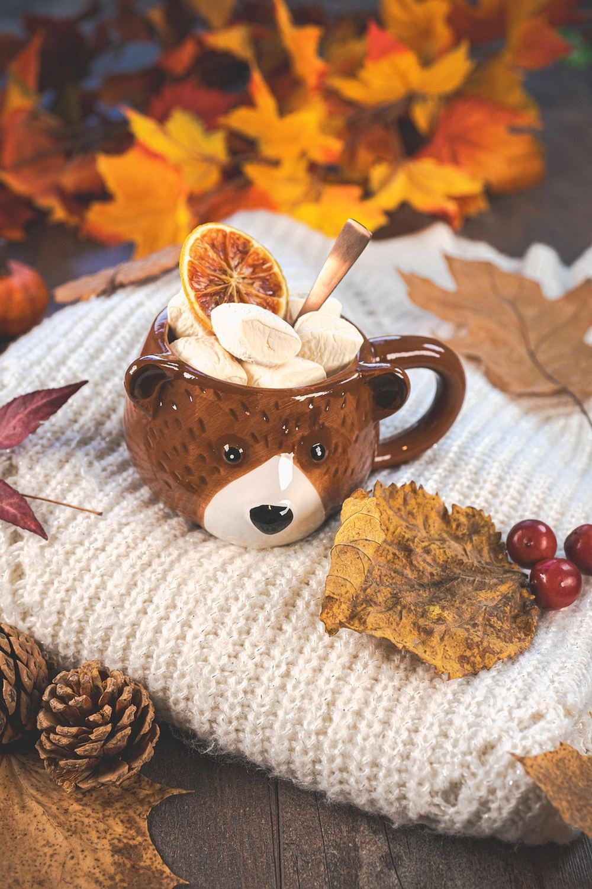
November 16, 2026
A full house, a long weekend and too many leftovers. Eight calm activities that work for every age, a simple plan for the day, and free pages to print before everyone wakes up.
November 15, 2026
Bought a "large print" puzzle book that still felt too small? What large print and jumbo print really mean, who each one suits, how to check a book before you buy, and free pages to compare both at home.
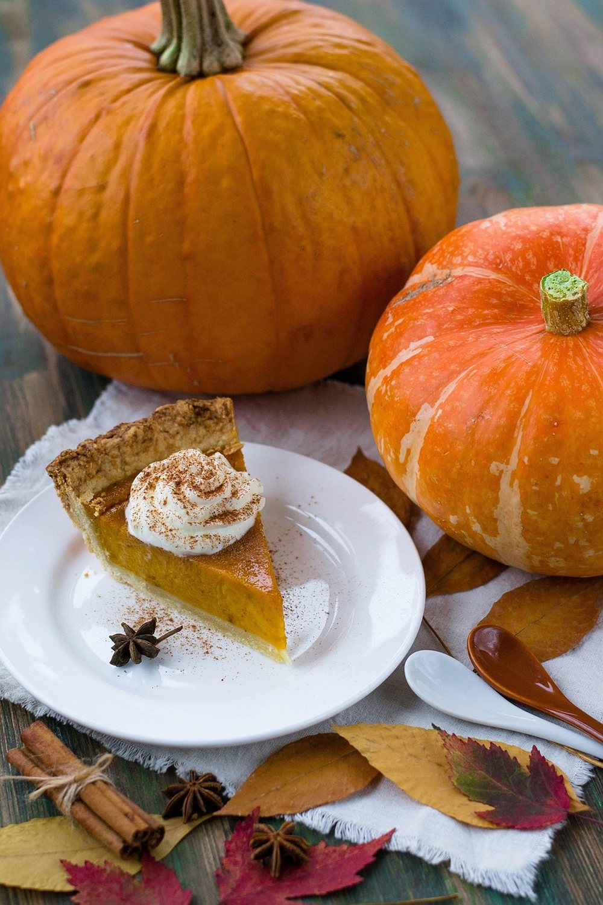
November 13, 2026
Grandma ends up alone in an armchair while the noise goes on around her? 8 easy Thanksgiving games for seniors, simple jobs that keep grandparents involved, small changes that help, and a free large print Thanksgiving word search.
November 11, 2026
Want a group game where nobody feels left behind or rushed? How to run a word search game night for family, friends or a senior center: what you need, a 60-minute plan, 4 game formats, fair rules and small prizes.
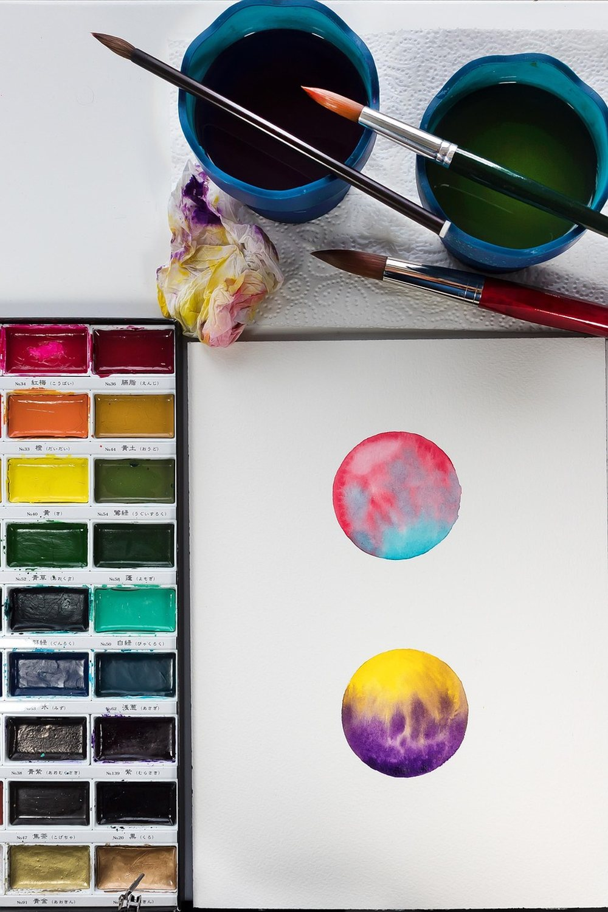
November 9, 2026
Does the after-school hour turn into a fight over tablets? 7 calm, screen-free activities kids can do in 15 minutes, how to make them easy to start, and free printable coloring pages and word searches for ages 4 to 10.
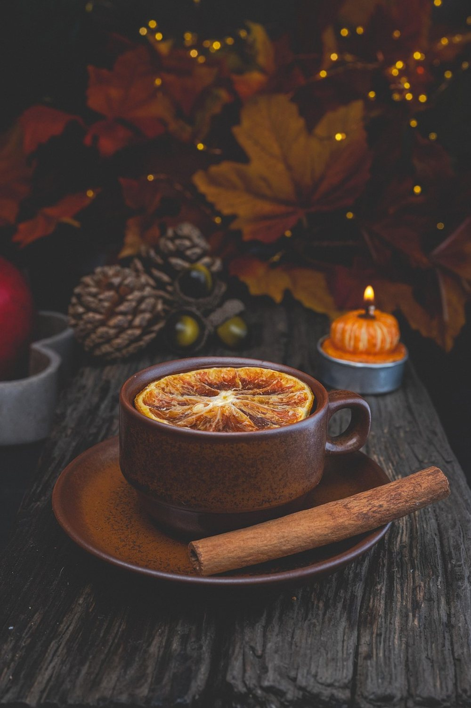
November 6, 2026
Shorter days and colder weather mean more time indoors and fewer outdoor routines. 9 cozy fall activities for seniors at home, how to build a simple autumn routine, tips for tired hands and eyes, and a free fall word search.
November 3, 2026
Do your visits drift into silence or the TV? 10 easy things to do with a parent in assisted living in an hour, what to pack in a small visit bag, what to do when a visit gets hard, and free large print printables to bring along.
October 31, 2026
Want a word search with your family's names, your class's spelling words or a friend's inside jokes? How to make one by hand in 8 simple steps, with grid sizes for every age, an easy answer key trick and free printables.
October 28, 2026
Bored after two minutes, or stuck staring at the grid? What really makes a word search easy or hard, the right level for kids, adults and seniors, and simple tricks to make any puzzle easier or harder.
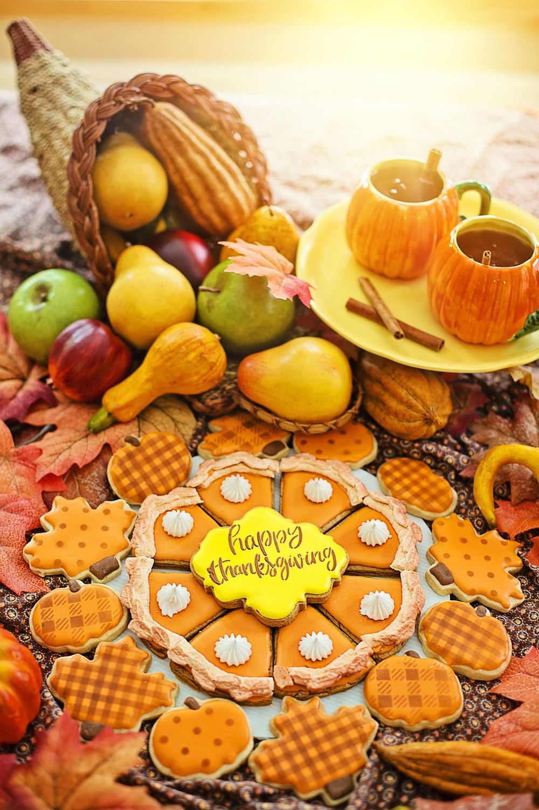
October 28, 2026
The turkey needs another hour and the kids' table is getting loud? 8 calm, screen-free Thanksgiving activities for ages 4 to 12, a simple kids' table kit and free printable word searches and coloring pages.
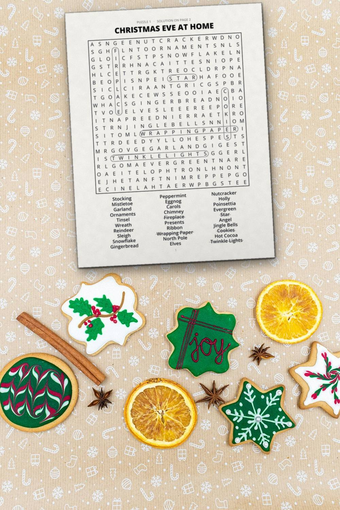
October 25, 2026
Looking for Christmas games for seniors that everyone can join? How to choose the right puzzle level, 9 calm word search activities for December and tips for memory care groups, with free large print printables.
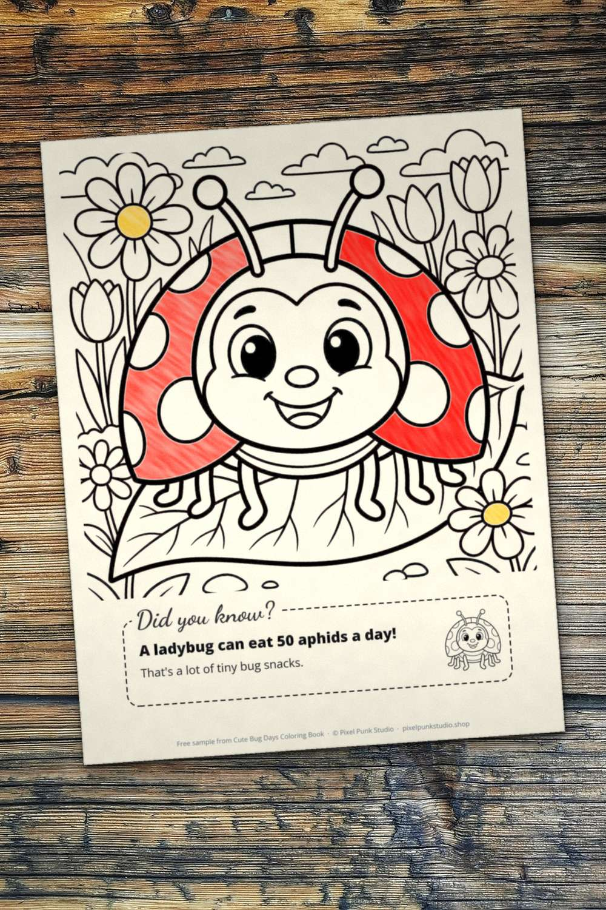
October 25, 2026
Does your child give up on coloring pages after two minutes? 8 easy ways to turn a bug coloring page into a game, a story or a backyard bug hunt, plus tips for little hands and a free ladybug coloring page.
October 21, 2026
How to keep every generation happily busy at Christmas: turn a printable word search into a game for the whole family, from an Advent countdown to a Christmas Eve race, with free large print puzzles.
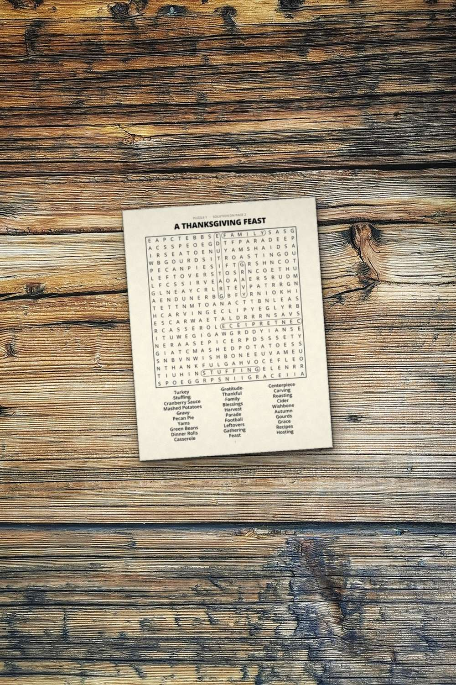
October 21, 2026
Squinting at tiny letters? What "large print" really means for word searches (letter size, spacing, grid and paper), and printer settings that keep free puzzles big, dark and easy on the eyes.
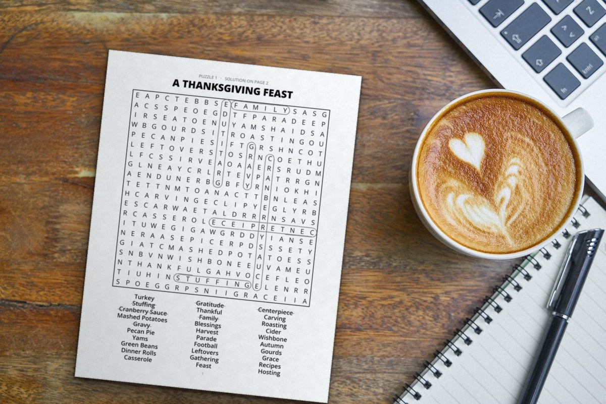
October 12, 2026
Simple, social and screen-free word search activities for seniors and older adults, at home or in a group, with free large print printables.
October 12, 2026
Simple hygge ideas for long winter evenings: candles, warm drinks, slow mornings, puzzles and small rituals that make the cold season feel cozy.
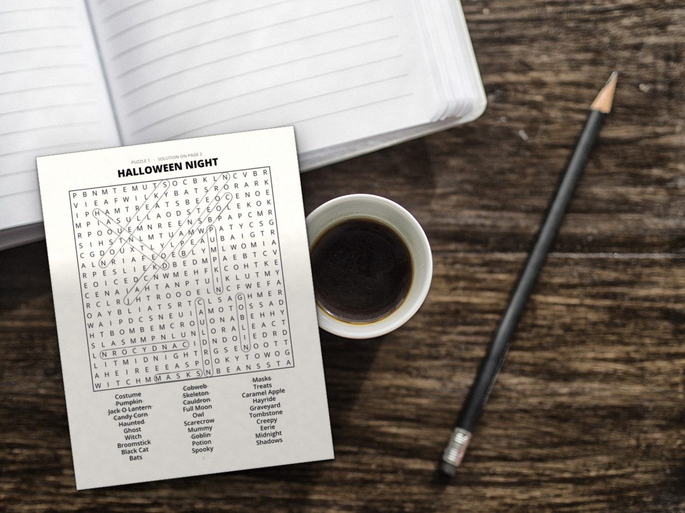
October 12, 2026
Easy word search strategies that actually work: scanning for rare letters, searching row by row, double letters and more. Practice with free large print printables.